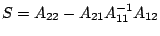

Next: About this document ...
A multiscale perspective on density functional theory
for inhomogeneous fluids
Michael A Heroux
18125 Kreigle Lake Rd, Avon MN 56310
maherou@sandia.gov
Laura J D Frink, Andrew G Salinger
Some modeling and simulations efforts have historically
encompassed multiscale phenomena without explicitly handling
multiscale features. One such area is density functional
theories for inhomogeneous fluids (Fluid-DFTs). In this
presentation we look at Fluid-DFTs from a fresh perspective,
calling out the fact that Fluid-DFTs incorporate multiple
length scales that are introduced in a way such that each
longer scale increases the fidelity of the model. By viewing
Fluid-DFTs from this perspective, we develop a mathematical
framework and a collection of solution algorithms that have
a dramatic impact on the robustness, performance and
scalability of the implicit equations generated by
Fluid-DFTs.
The basic
framework for all of our solver algorithms reflects the
importance of inter-physics coupling in the extended
variable formulation of the
Fluid-DFTs.
This physics coupling led
us to a physics-based block matrix formulation in order to
partition critical and nonlocal ancillary variables. The
idea is to partition the data into blocks that can be
optimally managed or solved. The general  block
matrix is
block
matrix is
where  is the number of DOFs
tracked per node. The superscript
is the number of DOFs
tracked per node. The superscript  denotes the block
of coefficients generated by DOF interactions with DOF
denotes the block
of coefficients generated by DOF interactions with DOF
 . The subscripts and partition lines impose a coarser
partitioning of the matrix into a
block system that
will be used with a Schur complement approach. We denote by
, , and the upper left,
upper right, lower left and lower right submatrix of the
coarse block matrix, respectively. Similarly
and , and and are the upper and lower parts
of
. The subscripts and partition lines impose a coarser
partitioning of the matrix into a
block system that
will be used with a Schur complement approach. We denote by
, , and the upper left,
upper right, lower left and lower right submatrix of the
coarse block matrix, respectively. Similarly
and , and and are the upper and lower parts
of  and
and  , respectively.
, respectively.
Given this two-level
structure, the basic strategy for solving each global linear
system generated by Newton's method is as follows:
- Identify and reorder DOFs
through
 such that
(the inverse of
) is easy to apply (in parallel).
such that
(the inverse of
) is easy to apply (in parallel).
- Determine a
preconditioner for
,
the Schur complement of
 with
respect to .
with
respect to .
- Solve
using a preconditioned Krylov method such as GMRES, with
preconditioner . Note that may or may not be
explicitly formed, depending on other problem details.
- Finally, solve for
.
Given this basic framework, we will describe specific
solvers for special categories of Fluid-DFT problems,
including 2 and 3 dimensional hard-sphere problems and
polymer chains. We give results for several problem areas
including nanopore and lipid bi-layer models where this
Schur complement approach provides one to two orders of
magnitude improvement in performance and an order of
magnitude reduction in memory requirements.
Next: About this document ...
Bruce Fast
2006-03-11